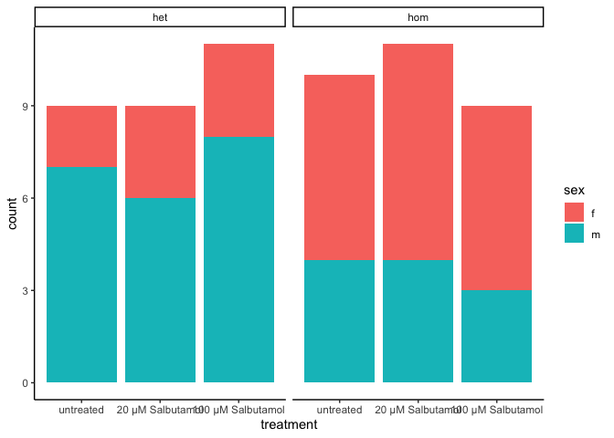

piulot14days
Karissa Barthelson
2023-06-25
Last updated: 2023-08-24
Checks: 6 1
Knit directory: 2023_MPSIII_salbutamol/
This reproducible R Markdown analysis was created with workflowr (version 1.7.0). The Checks tab describes the reproducibility checks that were applied when the results were created. The Past versions tab lists the development history.
The R Markdown file has unstaged changes. To know which version of the R Markdown file created these results, you’ll want to first commit it to the Git repo. If you’re still working on the analysis, you can ignore this warning. When you’re finished, you can run wflow_publish to commit the R Markdown file and build the HTML.
Great job! The global environment was empty. Objects defined in the global environment can affect the analysis in your R Markdown file in unknown ways. For reproduciblity it’s best to always run the code in an empty environment.
The command set.seed(20230614) was run prior to running the code in the R Markdown file. Setting a seed ensures that any results that rely on randomness, e.g. subsampling or permutations, are reproducible.
Great job! Recording the operating system, R version, and package versions is critical for reproducibility.
Nice! There were no cached chunks for this analysis, so you can be confident that you successfully produced the results during this run.
Great job! Using relative paths to the files within your workflowr project makes it easier to run your code on other machines.
Great! You are using Git for version control. Tracking code development and connecting the code version to the results is critical for reproducibility.
The results in this page were generated with repository version e7fb2e6. See the Past versions tab to see a history of the changes made to the R Markdown and HTML files.
Note that you need to be careful to ensure that all relevant files for the analysis have been committed to Git prior to generating the results (you can use wflow_publish or wflow_git_commit). workflowr only checks the R Markdown file, but you know if there are other scripts or data files that it depends on. Below is the status of the Git repository when the results were generated:
Ignored files:
Ignored: .DS_Store
Ignored: .Rhistory
Ignored: .Rproj.user/
Ignored: analysis/figure/
Ignored: code/.DS_Store
Ignored: data/.DS_Store
Ignored: data/exp1.2/.DS_Store
Ignored: data/exp1.2/raw_data/.DS_Store
Ignored: data/exp1.2/raw_data/distances/.DS_Store
Ignored: data/exp1.2/raw_data/zones/.DS_Store
Ignored: data/exp1.2/videos/
Ignored: data/exp1/.DS_Store
Ignored: data/exp1/processed_data/.DS_Store
Ignored: data/exp1/raw_data/.DS_Store
Ignored: data/exp1/videos/
Ignored: data/pilot/.DS_Store
Ignored: data/pilot/14 days/.DS_Store
Ignored: data/pilot/14 days/raw_data/.DS_Store
Ignored: data/pilot/7 days/.DS_Store
Ignored: data/pilot/7 days/raw_data/.DS_Store
Ignored: data/pilot/7 days/raw_data/distances/.DS_Store
Ignored: data/pilot/7 days/tracking_videos/
Untracked files:
Untracked: analysis/fullexp1-2.rmd
Untracked: code/experiment 1.2/
Untracked: code/experiment 1/distances_exp1.2.R
Untracked: code/plotMaking.R
Untracked: data/R_objects/
Untracked: data/exp1.2/processed_data/
Untracked: data/exp1.2/~$2023_Aug18_salbutamolexp1_2_meta.xlsx
Untracked: output/plots/
Unstaged changes:
Modified: .gitignore
Modified: analysis/fullexp1.rmd
Modified: analysis/piulot14days.rmd
Modified: data/exp1.2/2023_Aug18_salbutamolexp1_2_meta.xlsx
Modified: data/exp1.2/metadata_withGenotype.rds
Deleted: data/exp1.2/raw_data/distances/ymaze_inLT-20230818T102151-data_totals.csv
Deleted: data/exp1.2/raw_data/distances/ymazeinLT-20230818T095428-data_totals.csv
Deleted: data/exp1.2/raw_data/distances/ymazeinLT-20230818T095643-data_totals.csv
Deleted: data/exp1.2/raw_data/distances/ymazeinLT-20230818T164213-data_totals.csv
Deleted: data/exp1.2/raw_data/distances/ymazeinLT-20230818T164447-data_totals.csv
Deleted: data/exp1.2/raw_data/zones/ymaze8-20230818T095443.csv
Deleted: data/exp1.2/raw_data/zones/ymaze_inLT-20230818T102150.csv
Deleted: data/exp1.2/raw_data/zones/ymazeinLT-20230818T095427.csv
Deleted: data/exp1.2/raw_data/zones/ymazeinLT-20230818T095643.csv
Deleted: data/exp1.2/raw_data/zones/ymazeinLT-20230818T164213.csv
Deleted: data/exp1.2/raw_data/zones/ymazeinLT-20230818T164446.csv
Modified: output/R_objects/pilot/glmAlts7daysSalbutamol.rds
Note that any generated files, e.g. HTML, png, CSS, etc., are not included in this status report because it is ok for generated content to have uncommitted changes.
These are the previous versions of the repository in which changes were made to the R Markdown (analysis/piulot14days.rmd) and HTML (docs/piulot14days.html) files. If you’ve configured a remote Git repository (see ?wflow_git_remote), click on the hyperlinks in the table below to view the files as they were in that past version.
| File | Version | Author | Date | Message |
|---|---|---|---|---|
| Rmd | e7fb2e6 | Karissa Barthelson | 2023-08-23 | addded salbutamol exp 1.2 data + genotyping analsysis |
library(tidyverse)
library(readxl)
library(here)
library(magrittr)
library(scales)
library(readxl)
library(ggpubr)
library(ggeasy)
library(ggfortify)
library(ggbeeswarm)
library(ggforce)
library(ggrepel)
library(kableExtra)
# stat analysis
library(broom)
library(lme4)
library(performance)
library(car)
library(emmeans)
library(glmmTMB)
library(MASS)
# set the default theme for ggplot as theme_bw
theme_set(theme_classic())meta <- read_excel("data/pilot/7 days/06062023 salbutamol pilot fish metadata.xlsx",
sheet = "14 days") %>%
# tidy up colnames
mutate(fish_id = as.character(fish_id),
treatment = factor(treatment, levels = c("untreated",
"20 µM Salbutamol",
"100 µM Salbutamol")),
sex = as.factor(sex),
start_time = as.factor(`start time`),
genotype = factor(genotype, levels = c("het", "hom")),
geno_treat = paste0(genotype, " ", treatment) %>% as.factor()
)
final_data <- read_csv("data/pilot/14 days/processed_data/final_output.csv") %>%
dplyr::select(-1) %>%
mutate(fish_id = as.character(fish_id)) %>%
left_join(meta) %>%
dplyr::filter(genotype %in% c("het", "hom"))
# make an object which converts the final data to long format. for easier plotting in ggplot
final_data_long <- final_data %>%
gather(key = "tetras", value = "Count", # convert to long format
grep("[L|R]{4}",
colnames(.))
)
# also make an object which sums the tetragrams over the hour
final_data_summedoverbins <- final_data %>%
gather(key = "tetras", value = "Count", # convert to long format
grep("[L|R]{4}", # select the columns which contain a L or a R four times
colnames(.))
) %>%
group_by(fish_id, tetras) %>%
mutate(x = sum(Count)) %>% # sum the tetragram counts per fish_id
dplyr::select(colnames(meta), tetras, x) %>%
unique
distances_14days <- read_rds("data/pilot/14 days/processed_data/distanceData14days.rds") Introduction
This pilot analysis will determine whether treatment with salbutamol (B2-adrenergiv receptor) can rescue changes to behaviour in a zebrafish model of MPS IIIB (naglu homs).
The family of fish was consisted of 59 fish, het x hom so half het and half hom.
the fam was treated with either nothing, 20 uM or 100 uM salbutamol
7 days in the solution, changing the solution once 4 days in.
number fish per genotype and treatment
meta %>%
ggplot(aes(x = treatment, fill = sex))+
geom_bar() +
facet_wrap(~genotype)
assess propoer tracking
First need to have a look at whether tracking worked nicely for these fish. To do this, I will import the
# make a df which will contain bin numbers.
#
# 6 min bins
bin_df <- tibble(bins10 = c(rep(1, 360),
rep(2, 360),
rep(3, 360),
rep(4, 360),
rep(5, 360),
rep(6, 360),
rep(7, 360),
rep(8, 360),
rep(9, 360),
rep(10, 360)) %>% as.factor(),
# 10 min buins
bins6 = c(rep(1, 600),
rep(2, 600),
rep(3, 600),
rep(4, 600),
rep(5, 600),
rep(6, 600)
) %>% as.factor(),
BIN_NUM = distances_14days$BIN_NUM %>% unique)
distances_14days %>%
left_join(bin_df) %>%
group_by(fish_id, bins6) %>%
mutate(total_distance = sum(TOTAL_DISTANCE_IN_ZONE)) %>%
dplyr::distinct(bins6, .keep_all = T) %>%
dplyr::filter(genotype %in% c('het', 'hom')) %>%
ggplot(aes(x = bins6, y = total_distance)) +
geom_hline(yintercept = 25000, colour = "red") +
geom_jitter(alpha = 0.75) +
geom_boxplot(aes(x = bins6),
fill = NA) +
geom_label(aes(label = fish_id),
data = . %>%
dplyr::filter(total_distance > 25000)) +
geom_line(aes(group = fish_id, colour = fish_id),
data = . %>%
dplyr::filter(total_distance > 25000))A lot of fish look way more active. I went back and checked the tracking videos and the tracking did not seem to work very well. So I will omit these fish from the rest of the analysis.
fish2omit = distances_14days %>%
left_join(bin_df) %>%
group_by(fish_id, bins6) %>%
mutate(total_distance = sum(TOTAL_DISTANCE_IN_ZONE)) %>%
dplyr::distinct(bins6, .keep_all = T) %>%
dplyr::filter(genotype %in% c('het', 'hom')) %>%
dplyr::filter(total_distance > 25000) %>%
.$fish_id %>%
unique()
distances_14days %<>%
dplyr::filter(!(fish_id %in% fish2omit))
final_data %<>%
dplyr::filter(!(fish_id %in% fish2omit))
final_data_long %<>%
dplyr::filter(!(fish_id %in% fish2omit))
final_data_summedoverbins %<>%
dplyr::filter(!(fish_id %in% fish2omit))trial effects
distances_14days %>%
left_join(bin_df) %>%
group_by(fish_id, bins6) %>%
mutate(total_distance = sum(TOTAL_DISTANCE_IN_ZONE)) %>%
dplyr::distinct(bins6, .keep_all = T) %>%
dplyr::filter(genotype %in% c('het', 'hom')) %>%
ggplot(aes(y = total_distance,
x = behavBatch %>% as.factor())) +
geom_hline(yintercept = 25000, colour = "red") +
geom_jitter(alpha = 0.75) +
geom_boxplot(fill = NA) +
geom_label(aes(label = fish_id),
data = . %>%
dplyr::filter(total_distance > 24000)) +
facet_wrap(~bins6, scales = "free_x")total distance travelled
fit.dists <- distances_14days %>%
left_join(bin_df) %>%
group_by(fish_id, bins6) %>%
mutate(total_distance = sum(TOTAL_DISTANCE_IN_ZONE)) %>%
dplyr::distinct(bins6, .keep_all = T) %>%
dplyr::filter(genotype %in% c('het', 'hom')) %>%
lmer(total_distance ~ (genotype*treatment*bins6*sex) + (1|`start time`) +(1|fish_id),
data = .)
# check assumptions
# all look ok
check_model(fit.dists)an <- Anova(fit.dists)
emmeans(fit.dists, list(pairwise ~ genotype * treatment * sex), adjust = "tukey")$`emmeans of genotype, treatment, sex`
genotype treatment sex emmean SE df lower.CL upper.CL
het untreated f 6267 3360 37.7 -537 13071
hom untreated f 9016 1474 34.8 6023 12010
het 20 µM Salbutamol f 10549 1957 31.7 6562 14537
hom 20 µM Salbutamol f 10219 1397 27.4 7355 13084
het 100 µM Salbutamol f 5850 1970 31.7 1836 9865
hom 100 µM Salbutamol f 6258 1325 35.4 3568 8947
het untreated m 9741 1283 25.6 7101 12381
hom untreated m 7524 1966 31.7 3517 11531
het 20 µM Salbutamol m 14973 1895 37.7 11136 18810
hom 20 µM Salbutamol m 8003 2325 37.7 3295 12711
het 100 µM Salbutamol m 11028 1180 24.2 8593 13463
hom 100 µM Salbutamol m 7910 1948 31.7 3941 11879
Results are averaged over the levels of: bins6
Degrees-of-freedom method: kenward-roger
Confidence level used: 0.95
$`pairwise differences of genotype, treatment, sex`
1 estimate SE df t.ratio
het untreated f - hom untreated f -2749.2 3725 37.4 -0.738
het untreated f - het 20 µM Salbutamol f -4282.1 3944 36.8 -1.086
het untreated f - hom 20 µM Salbutamol f -3952.0 3676 36.9 -1.075
het untreated f - het 100 µM Salbutamol f 416.7 3949 36.8 0.106
het untreated f - hom 100 µM Salbutamol f 9.3 3605 38.0 0.003
het untreated f - het untreated m -3474.0 3464 36.1 -1.003
het untreated f - hom untreated m -1256.6 3941 36.8 -0.319
het untreated f - het 20 µM Salbutamol m -8705.7 3912 37.7 -2.225
het untreated f - hom 20 µM Salbutamol m -1735.8 4156 37.7 -0.418
het untreated f - het 100 µM Salbutamol m -4761.0 3517 37.8 -1.354
het untreated f - hom 100 µM Salbutamol m -1642.8 3819 37.8 -0.430
hom untreated f - het 20 µM Salbutamol f -1533.0 2509 32.9 -0.611
hom untreated f - hom 20 µM Salbutamol f -1202.8 1952 36.2 -0.616
hom untreated f - het 100 µM Salbutamol f 3165.9 2467 37.4 1.283
hom untreated f - hom 100 µM Salbutamol f 2758.5 2005 38.0 1.376
hom untreated f - het untreated m -724.8 1968 38.0 -0.368
hom untreated f - hom untreated m 1492.5 2390 37.3 0.624
hom untreated f - het 20 µM Salbutamol m -5956.5 2366 36.2 -2.518
hom untreated f - hom 20 µM Salbutamol m 1013.4 2755 38.0 0.368
hom untreated f - het 100 µM Salbutamol m -2011.8 1954 32.8 -1.030
hom untreated f - hom 100 µM Salbutamol m 1106.4 2437 37.4 0.454
het 20 µM Salbutamol f - hom 20 µM Salbutamol f 330.1 2388 35.4 0.138
het 20 µM Salbutamol f - het 100 µM Salbutamol f 4698.9 2745 37.7 1.712
het 20 µM Salbutamol f - hom 100 µM Salbutamol f 4291.4 2363 38.0 1.816
het 20 µM Salbutamol f - het untreated m 808.2 2409 29.9 0.336
het 20 µM Salbutamol f - hom untreated m 3025.5 2843 31.7 1.064
het 20 µM Salbutamol f - het 20 µM Salbutamol m -4423.5 2731 37.7 -1.620
het 20 µM Salbutamol f - hom 20 µM Salbutamol m 2546.3 3047 38.0 0.836
het 20 µM Salbutamol f - het 100 µM Salbutamol m -478.9 2218 37.2 -0.216
het 20 µM Salbutamol f - hom 100 µM Salbutamol m 2639.3 2830 31.7 0.933
hom 20 µM Salbutamol f - het 100 µM Salbutamol f 4368.7 2465 33.0 1.772
hom 20 µM Salbutamol f - hom 100 µM Salbutamol f 3961.3 1988 33.7 1.993
hom 20 µM Salbutamol f - het untreated m 478.0 1910 35.8 0.250
hom 20 µM Salbutamol f - hom untreated m 2695.4 2399 37.1 1.123
hom 20 µM Salbutamol f - het 20 µM Salbutamol m -4753.7 2298 36.5 -2.069
hom 20 µM Salbutamol f - hom 20 µM Salbutamol m 2216.2 2754 36.1 0.805
hom 20 µM Salbutamol f - het 100 µM Salbutamol m -809.0 1865 29.7 -0.434
hom 20 µM Salbutamol f - hom 100 µM Salbutamol m 2309.2 2440 30.3 0.946
het 100 µM Salbutamol f - hom 100 µM Salbutamol f -407.4 2292 36.5 -0.178
het 100 µM Salbutamol f - het untreated m -3890.7 2375 34.7 -1.638
het 100 µM Salbutamol f - hom untreated m -1673.4 2636 35.6 -0.635
het 100 µM Salbutamol f - het 20 µM Salbutamol m -9122.4 2807 35.4 -3.250
het 100 µM Salbutamol f - hom 20 µM Salbutamol m -2152.5 3106 36.0 -0.693
het 100 µM Salbutamol f - het 100 µM Salbutamol m -5177.7 2336 34.1 -2.216
het 100 µM Salbutamol f - hom 100 µM Salbutamol m -2059.5 2830 31.7 -0.728
hom 100 µM Salbutamol f - het untreated m -3483.3 1850 37.9 -1.882
hom 100 µM Salbutamol f - hom untreated m -1265.9 2316 37.8 -0.547
hom 100 µM Salbutamol f - het 20 µM Salbutamol m -8715.0 2356 38.0 -3.700
hom 100 µM Salbutamol f - hom 20 µM Salbutamol m -1745.1 2672 37.4 -0.653
hom 100 µM Salbutamol f - het 100 µM Salbutamol m -4770.3 1769 37.4 -2.697
hom 100 µM Salbutamol f - hom 100 µM Salbutamol m -1652.1 2351 38.0 -0.703
het untreated m - hom untreated m 2217.3 2353 36.5 0.942
het untreated m - het 20 µM Salbutamol m -5231.7 2299 37.9 -2.275
het untreated m - hom 20 µM Salbutamol m 1738.2 2722 36.1 0.638
het untreated m - het 100 µM Salbutamol m -1287.0 1750 34.8 -0.736
het untreated m - hom 100 µM Salbutamol m 1831.2 2320 36.5 0.789
hom untreated m - het 20 µM Salbutamol m -7449.0 2743 37.7 -2.716
hom untreated m - hom 20 µM Salbutamol m -479.2 3084 36.0 -0.155
hom untreated m - het 100 µM Salbutamol m -3504.4 2363 29.7 -1.483
hom untreated m - hom 100 µM Salbutamol m -386.2 2824 31.7 -0.137
het 20 µM Salbutamol m - hom 20 µM Salbutamol m 6969.9 2963 37.5 2.352
het 20 µM Salbutamol m - het 100 µM Salbutamol m 3944.7 2226 38.0 1.772
het 20 µM Salbutamol m - hom 100 µM Salbutamol m 7062.9 2782 35.4 2.539
hom 20 µM Salbutamol m - het 100 µM Salbutamol m -3025.2 2571 36.6 -1.177
hom 20 µM Salbutamol m - hom 100 µM Salbutamol m 93.0 2980 36.7 0.031
het 100 µM Salbutamol m - hom 100 µM Salbutamol m 3118.2 2281 37.2 1.367
p.value
0.9998
0.9935
0.9940
1.0000
1.0000
0.9967
1.0000
0.5429
1.0000
0.9655
1.0000
1.0000
1.0000
0.9764
0.9613
1.0000
1.0000
0.3615
1.0000
0.9957
1.0000
1.0000
0.8516
0.7995
1.0000
0.9943
0.8910
0.9994
1.0000
0.9981
0.8209
0.6948
1.0000
0.9915
0.6464
0.9995
1.0000
0.9978
1.0000
0.8827
1.0000
0.0882
0.9999
0.5500
0.9998
0.7622
1.0000
0.0287
0.9999
0.2668
0.9999
0.9981
0.5100
1.0000
0.9998
0.9996
0.2577
1.0000
0.9339
1.0000
0.4603
0.8226
0.3501
0.9877
1.0000
0.9628
Results are averaged over the levels of: bins6
Degrees-of-freedom method: kenward-roger
P value adjustment: tukey method for comparing a family of 12 estimates # geno treat sex
print(emmeans(fit.dists, ~ genotype * treatment * sex), type = "response") %>%
as_tibble() %>%
ggplot(aes(x = treatment, y = emmean, colour = genotype)) +
geom_col(aes(fill = genotype),
alpha = 0.75,
position = position_dodge()) +
geom_errorbar(aes(ymin = lower.CL, ymax = upper.CL),
position = position_dodge()) +
facet_wrap(~sex, nrow = 1) genotype treatment sex emmean SE df lower.CL upper.CL
het untreated f 6267 3360 37.7 -537 13071
hom untreated f 9016 1474 34.8 6023 12010
het 20 µM Salbutamol f 10549 1957 31.7 6562 14537
hom 20 µM Salbutamol f 10219 1397 27.4 7355 13084
het 100 µM Salbutamol f 5850 1970 31.7 1836 9865
hom 100 µM Salbutamol f 6258 1325 35.4 3568 8947
het untreated m 9741 1283 25.6 7101 12381
hom untreated m 7524 1966 31.7 3517 11531
het 20 µM Salbutamol m 14973 1895 37.7 11136 18810
hom 20 µM Salbutamol m 8003 2325 37.7 3295 12711
het 100 µM Salbutamol m 11028 1180 24.2 8593 13463
hom 100 µM Salbutamol m 7910 1948 31.7 3941 11879
Results are averaged over the levels of: bins6
Degrees-of-freedom method: kenward-roger
Confidence level used: 0.95 # geno treat
print(emmeans(fit.dists, ~ genotype * treatment), type = "response") %>%
as_tibble() %>%
ggplot(aes(x = treatment, y = emmean/100, colour = genotype)) +
geom_col(aes(fill = genotype),
alpha = 0.75,
position = position_dodge()) +
geom_errorbar(aes(ymin = lower.CL/100, ymax = upper.CL/100),
position = position_dodge()) +
facet_wrap(~treatment, nrow = 1, scales = "free_x") +
labs(title = "14 days on salbutamol (with alarm)",
y = "Average distance travelled\nper 10 min bin (cm)") genotype treatment emmean SE df lower.CL upper.CL
het untreated 8004 1862 28.8 4195 11814
hom untreated 8270 1262 20.6 5643 10897
het 20 µM Salbutamol 12761 1358 31.7 9993 15529
hom 20 µM Salbutamol 9111 1335 36.1 6404 11818
het 100 µM Salbutamol 8439 1128 25.0 6116 10763
hom 100 µM Salbutamol 7084 1180 24.6 4651 9517
Results are averaged over the levels of: bins6, sex
Degrees-of-freedom method: kenward-roger
Confidence level used: 0.95 
# geno treat bin
print(emmeans(fit.dists, ~ genotype * treatment * bins6 * sex), type = "response") %>%
as_tibble() %>%
ggplot(aes(x = bins6, y = emmean, colour = genotype)) +
geom_col(aes(fill =genotype),
alpha = 0.75,
position = position_dodge()) +
geom_errorbar(aes(ymin = lower.CL, ymax = upper.CL),
position = position_dodge()) +
facet_wrap(~sex+treatment, nrow = 1) genotype treatment bins6 sex emmean SE df lower.CL upper.CL
het untreated 1 f 10793 3904 71.4 3010 18576
hom untreated 1 f 13616 1722 66.0 10178 17053
het 20 µM Salbutamol 1 f 14525 2269 60.4 9987 19062
hom 20 µM Salbutamol 1 f 15766 1616 52.4 12525 19008
het 100 µM Salbutamol 1 f 10572 2280 60.4 6013 15132
hom 100 µM Salbutamol 1 f 9815 1554 67.2 6713 12916
het untreated 2 f 11090 3904 71.4 3307 18873
hom untreated 2 f 8290 1722 66.0 4852 11727
het 20 µM Salbutamol 2 f 11987 2269 60.4 7450 16524
hom 20 µM Salbutamol 2 f 12189 1616 52.4 8948 15430
het 100 µM Salbutamol 2 f 7647 2280 60.4 3087 12207
hom 100 µM Salbutamol 2 f 6904 1554 67.2 3803 10006
het untreated 3 f 4966 3904 71.4 -2817 12749
hom untreated 3 f 8403 1722 66.0 4966 11840
het 20 µM Salbutamol 3 f 10626 2269 60.4 6089 15163
hom 20 µM Salbutamol 3 f 10259 1616 52.4 7018 13500
het 100 µM Salbutamol 3 f 5181 2280 60.4 621 9741
hom 100 µM Salbutamol 3 f 5862 1554 67.2 2760 8963
het untreated 4 f 3417 3904 71.4 -4366 11200
hom untreated 4 f 9151 1722 66.0 5714 12588
het 20 µM Salbutamol 4 f 11989 2269 60.4 7452 16527
hom 20 µM Salbutamol 4 f 7981 1616 52.4 4740 11222
het 100 µM Salbutamol 4 f 4420 2280 60.4 -140 8980
hom 100 µM Salbutamol 4 f 5052 1554 67.2 1950 8153
het untreated 5 f 3902 3904 71.4 -3881 11685
hom untreated 5 f 7794 1722 66.0 4357 11231
het 20 µM Salbutamol 5 f 8230 2269 60.4 3693 12768
hom 20 µM Salbutamol 5 f 7788 1616 52.4 4547 11030
het 100 µM Salbutamol 5 f 3551 2280 60.4 -1009 8111
hom 100 µM Salbutamol 5 f 4747 1554 67.2 1646 7849
het untreated 6 f 3435 3904 71.4 -4348 11218
hom untreated 6 f 6844 1722 66.0 3407 10281
het 20 µM Salbutamol 6 f 5938 2269 60.4 1401 10475
hom 20 µM Salbutamol 6 f 7331 1616 52.4 4090 10572
het 100 µM Salbutamol 6 f 3730 2280 60.4 -829 8290
hom 100 µM Salbutamol 6 f 5167 1554 67.2 2066 8269
het untreated 1 m 15293 1487 48.9 12305 18281
hom untreated 1 m 11519 2277 60.4 6965 16072
het 20 µM Salbutamol 1 m 17675 2215 71.4 13258 22091
hom 20 µM Salbutamol 1 m 13109 2717 71.4 7693 18525
het 100 µM Salbutamol 1 m 15970 1374 46.4 13206 18735
hom 100 µM Salbutamol 1 m 10649 2261 60.4 6128 15170
het untreated 2 m 11818 1487 48.9 8830 14807
hom untreated 2 m 7557 2277 60.4 3004 12111
het 20 µM Salbutamol 2 m 15972 2215 71.4 11555 20388
hom 20 µM Salbutamol 2 m 9810 2717 71.4 4393 15226
het 100 µM Salbutamol 2 m 13256 1374 46.4 10492 16021
hom 100 µM Salbutamol 2 m 11631 2261 60.4 7109 16152
het untreated 3 m 9036 1487 48.9 6048 12024
hom untreated 3 m 6298 2277 60.4 1745 10852
het 20 µM Salbutamol 3 m 14342 2215 71.4 9926 18759
hom 20 µM Salbutamol 3 m 8110 2717 71.4 2693 13526
het 100 µM Salbutamol 3 m 12608 1374 46.4 9843 15372
hom 100 µM Salbutamol 3 m 9154 2261 60.4 4633 13675
het untreated 4 m 9307 1487 48.9 6319 12295
hom untreated 4 m 6492 2277 60.4 1939 11046
het 20 µM Salbutamol 4 m 14380 2215 71.4 9963 18796
hom 20 µM Salbutamol 4 m 7012 2717 71.4 1596 12428
het 100 µM Salbutamol 4 m 9954 1374 46.4 7189 12719
hom 100 µM Salbutamol 4 m 6783 2261 60.4 2262 11304
het untreated 5 m 6577 1487 48.9 3589 9565
hom untreated 5 m 5739 2277 60.4 1185 10292
het 20 µM Salbutamol 5 m 15055 2215 71.4 10638 19471
hom 20 µM Salbutamol 5 m 7089 2717 71.4 1673 12505
het 100 µM Salbutamol 5 m 8046 1374 46.4 5281 10810
hom 100 µM Salbutamol 5 m 6015 2261 60.4 1494 10537
het untreated 6 m 6415 1487 48.9 3427 9404
hom untreated 6 m 7537 2277 60.4 2984 12091
het 20 µM Salbutamol 6 m 12414 2215 71.4 7998 16830
hom 20 µM Salbutamol 6 m 2888 2717 71.4 -2528 8305
het 100 µM Salbutamol 6 m 6335 1374 46.4 3570 9099
hom 100 µM Salbutamol 6 m 3227 2261 60.4 -1294 7748
Degrees-of-freedom method: kenward-roger
Confidence level used: 0.95 print(emmeans(fit.dists, ~ genotype * treatment), type = "response") %>%
as_tibble() %>%
ggplot(aes(x = treatment, y = emmean/100, colour = genotype)) +
geom_col(aes(fill = genotype),
alpha = 0.75,
position = position_dodge()) +
geom_errorbar(aes(ymin = lower.CL/100, ymax = upper.CL/100),
position = position_dodge()) +
facet_wrap(~treatment, nrow = 1, scales = "free_x") +
labs(title = "14 days on salbutamol (with alarm at 7 dys)",
y = "Average distance travelled\nper 10 min bin (cm)") genotype treatment emmean SE df lower.CL upper.CL
het untreated 8004 1862 28.8 4195 11814
hom untreated 8270 1262 20.6 5643 10897
het 20 µM Salbutamol 12761 1358 31.7 9993 15529
hom 20 µM Salbutamol 9111 1335 36.1 6404 11818
het 100 µM Salbutamol 8439 1128 25.0 6116 10763
hom 100 µM Salbutamol 7084 1180 24.6 4651 9517
Results are averaged over the levels of: bins6, sex
Degrees-of-freedom method: kenward-roger
Confidence level used: 0.95 time spent in each zone of the Y-maze
I next will assess whether fish in each maze spend more or less time in each zone of the Y-maze (i.e. in each arm of the maze or the middle). This is also kind of representitve of locomotion, as they might spend longer in each arm of the maze if the swim speed was slower.
In the plot below, the fish appear to spend less time in zone 4. This can be explained as zone 4 is the middle zone and the fish generally swim straight through it.
read_csv("data/pilot/14 days/processed_data/time_in_zone.csv") %>%
mutate(fish_id = as.character(fish_id)) %>%
dplyr::select(fish_id, bin, zone, time_in_zone) %>%
left_join(meta) %>%
dplyr::filter(genotype %in% c("het", "hom")) %>%
dplyr::filter(zone %in% c(1:4)) %>%
group_by(fish_id, zone) %>%
mutate(total_timeInZone = sum(time_in_zone),
zone = paste0("zone ", zone)) %>%
dplyr::distinct(fish_id, zone, .keep_all = TRUE) %>%
ggplot(aes(x = treatment, y = total_timeInZone/60)) +
geom_quasirandom(aes(colour = genotype)
) +
geom_boxplot(aes(fill = genotype),
outlier.shape = NA,
alpha = 0.5) +
facet_wrap(~zone, nrow = 1) +
scale_y_log10() +
scale_fill_viridis_d(end = 0.75) +
scale_colour_viridis_d(end = 0.75) +
easy_rotate_x_labels(angle = -45) +
labs(y = "Total time spent in each zone (mins, log scale)",
title = "Total time spent in each zone")check for handedness
Fontana et al. (https://doi.org/10.1007/s10071-019-01296-9, Matt Parker’s group) showed that fish sometimes show a behavioural lateralisation (i.e. handedness). If fish show this, then they would perform less alternation tetragrams not due to working memory. The plot below circles each of the L_R bias groups.
# make the LR bias object
LR_Bias <- final_data %>%
dplyr::select(L, R, total_turns, fish_id) %>%
group_by(fish_id) %>%
mutate(L = sum(L),
R = sum(R),
total_turns = sum(total_turns),
L_R_bias = case_when( #consider more than 60% of the time performing a left or right turn to be a bias
L/total_turns > 0.6 ~ "Left",
R/total_turns > 0.6 ~ "Right",
TRUE ~ "Neither"
)) %>%
dplyr::select(fish_id, L_R_bias) %>%
unique() %>%
mutate(L_R_bias = factor(L_R_bias,
levels = c("Neither", "Left", "Right"))
)ggarrange(
final_data %>%
left_join(LR_Bias) %>%
group_by(fish_id) %>%
mutate(L = sum(L),
R = sum(R),
total_turns = sum(total_turns)
) %>%
ggplot(aes(L, R)) +
geom_point(aes(shape = L_R_bias, colour = genotype),
size = 4) +
geom_mark_ellipse(aes(fill = L_R_bias, label = L_R_bias),
alpha = 0.2,
con.cap = 0) +
labs(title = "By Genotype") +
scale_color_viridis_d(end = 0.75) +
theme(legend.position = "left",
aspect.ratio = 1) +
scale_fill_viridis_d(option = "plasma"),
final_data %>%
left_join(LR_Bias) %>%
group_by(fish_id) %>%
mutate(L = sum(L),
R = sum(R),
total_turns = sum(total_turns)
) %>%
ggplot(aes(L, R)) +
geom_point(aes(shape = L_R_bias, colour = treatment),
size = 4) +
geom_mark_ellipse(aes(fill = L_R_bias, label = L_R_bias),
alpha = 0.2,
con.cap = 0)+
labs(title = "By Treatment") +
scale_color_viridis_d(end = 0.75) +
scale_fill_viridis_d(option = "plasma") +
theme(legend.position = "right",
aspect.ratio = 1)
)The overall propotions of fish showing left, right or no bias is simialr across the 4 experimental groups.
final_data %>%
left_join(LR_Bias) %>%
group_by(fish_id) %>%
mutate(L = sum(L),
R = sum(R),
total_turns = sum(total_turns),
genotreat = paste0(genotype, "_", treatment)
) %>%
ggplot(aes(x = genotreat, fill = L_R_bias )) +
geom_bar()# test for changes to alternation Cleal et al. showed that zebrafish naturally perform more of the alternation tetragrams (LRLR and RLRL) in a Y-maze. Here, we actually see more reps that alts. I will look at this more closely later.
final_data_summedoverbins %>%
dplyr::distinct(x, .keep_all = T) %>%
ggplot(aes(x = tetras, y = x)) +
geom_jitter(aes(colour = tetras,
shape = sex)) +
geom_boxplot(outlier.shape = NA,
fill = NA
) +
scale_fill_viridis_d() +
labs(y = "Number of tetragrams",
colour = "Tetragram",
x = "Tetragram")+
theme(legend.position = "bottom") +
ggtitle("Total number of 16 possible tetragrams performed by zebrafish in a Y-maze\nduring a 1 hour search period") We can also overlay the genotype boxplots as shown below. Looks like the heterozyous and homozygous fish perform more alternations than the WT fish. I will look into this more later in the analysis
final_data_summedoverbins %>%
ggplot(aes(x = tetras, y = x)) +
geom_jitter(aes(colour = tetras,
shape = sex)) +
geom_boxplot(outlier.shape = NA,
aes(fill = genotype),
alpha = 0.5,
) +
scale_fill_viridis_d() +
labs(y = "Number of tetragrams",
colour = "Tetragram",
x = "Tetragram")+
theme(legend.position = "bottom") +
facet_wrap(~treatment, ncol = 1) +
easy_rotate_x_labels(angle = -45) +
annotate("rect", # add some boxes aeround the alts
xmin = 5.5, xmax = 6.5,
ymin = -1, ymax = 200,
alpha = 0, color= "red") +
annotate("rect",
xmin = 10.5, xmax = 11.5,
ymin = -1, ymax = 200,
alpha = 0, color= "red") +
ggtitle("Total number of 16 possible tetragrams performed by zebrafish in a Y-maze\nduring a 1 hour search period") The alternation tetragrams are the tetragram of interest (the measure of working memory). Below indicates the number of tetragrams performed by zerbafish across the 6 x 10 min blocks of the hour they spent in the maze.
final_data_long %>%
dplyr::distinct(fish_id, bin, .keep_all = T) %>%
mutate(binforvis = case_when(
bin == 1 ~ "0-10 mins",
bin == 2 ~ "10-20 mins",
bin == 3 ~ "20-30 mins",
bin == 4 ~ "30-40 mins",
bin == 5 ~ "40-50 mins",
bin == 6 ~ "50-60 mins"
)) %>%
ggplot(aes(x = treatment, y = alts)) +
geom_boxplot(outlier.shape = NA,
aes(fill = genotype),
alpha = 0.5) +
geom_point(aes(colour = genotype),
position = position_jitterdodge()) +
facet_wrap(~binforvis, nrow = 1) +
theme(axis.text.x = element_text(angle = 45, hjust = 1, vjust = 1),
legend.position = "bottom") +
ylab("Frequency of alternation tetragrams (LRLR + RLRL)") +
scale_colour_viridis_d(end = 0.75) +
scale_fill_viridis_d(end = 0.75) We can also display this as the relative amount of alternation tetragrams performed by zebrafish in a 1 hour search period. This will control for how active each fish is. Again, fish 18 and 24 looks like outliers.
final_data_long %>%
dplyr::distinct(fish_id, bin, .keep_all = T) %>%
mutate(binforvis = case_when(
bin == 1 ~ "0-10 mins",
bin == 2 ~ "10-20 mins",
bin == 3 ~ "20-30 mins",
bin == 4 ~ "30-40 mins",
bin == 5 ~ "40-50 mins",
bin == 6 ~ "50-60 mins"
)) %>%
ggplot(aes(x = treatment, y = rel_alts)) +
geom_boxplot(outlier.shape = NA,
aes(fill = genotype),
alpha = 0.5) +
geom_point(aes(colour = genotype),
position = position_jitterdodge()) +
facet_wrap(~binforvis, nrow = 1) +
theme(axis.text.x = element_text(angle = 45, hjust = 1, vjust = 1),
legend.position = "bottom") +
ylab("Relative number of alternation tetragrams\n(LRLR + RLRL) / total_turns") +
scale_colour_viridis_d(end = 0.75) +
scale_fill_viridis_d(end = 0.75) Finally, I will now test for alternation changes using a generalised linear mixed effect model (beta-binomial distribution). We use this because it is count data which is over-dispersed, and fixed and random effects are included. The link function is logit. No significant effects are observed on working memory. Only the L_R_bias term is significant, this is to be expected, as they would probably be performing more repitiions. The bin:Genotype effect is close (ish) to statistical significance. Meaning that this might have something there. but this does not take into account the Treatment group.
Note that I have ignored the effect of Sex here. We have never really seen a Sex effect in all of our ymaze analyses.
glm <-
final_data %>%
left_join(LR_Bias) %>%
mutate(
non_alts = total_turns - alts,
bin = as.factor(bin)
) %>%
glmmTMB(
cbind(alts, non_alts) ~ (bin + genotype + treatment)^3 + L_R_bias + sex + (1|`start time`) + (1|fish_id),
family = betabinomial(),
data = .
)
Anova(glm) %>%
as.data.frame() %>%
dplyr::rename(pval = `Pr(>Chisq)`) %>%
kable() %>%
kable_styling(full_width = FALSE) %>%
row_spec(row = 4, bold = TRUE)| Chisq | Df | pval | |
|---|---|---|---|
| bin | 3.536841 | 5 | 0.6178206 |
| genotype | 4.951462 | 1 | 0.0260686 |
| treatment | 3.729494 | 2 | 0.1549354 |
| L_R_bias | 21.268684 | 2 | 0.0000241 |
| sex | 3.156344 | 1 | 0.0756324 |
| bin:genotype | 7.433199 | 5 | 0.1903640 |
| bin:treatment | 7.382678 | 10 | 0.6888909 |
| genotype:treatment | 4.614963 | 2 | 0.0995115 |
| bin:genotype:treatment | 14.980949 | 10 | 0.1327579 |
Vis
genotype x treatment
The effect of genotype x treatment is not too far off statistical significance (p = 0.17) and is trending towards a rescue.
print(emmeans(glm, ~ genotype * treatment * sex), type = "response") %>%
as_tibble() %>%
ggplot(aes(x = treatment, y = prob, colour = genotype)) +
geom_col(aes(fill = genotype),
alpha = 0.5,
width = 0.75,
position = position_dodge()) +
geom_errorbar(aes(ymin = asymp.LCL, ymax = asymp.UCL ),
width = 0.125,
size = 1,
position = position_dodge(width = 0.75)) +
facet_wrap(~sex ) +
theme(axis.text.x = element_text(hjust = 1,
vjust = 1,
angle = 45),
legend.position = "bottom") +
scale_color_viridis_d(end = 0.8, option = "inferno") +
scale_fill_viridis_d(end = 0.8, option = "inferno") +
labs(y = "Estimated probability of alternation\n(LRLR + RLRL)",
x = "genotype",
title = "GLM predicted probability of zebrafish performing an alternation\ntetragram due to Genotype and Treatment"
) genotype treatment sex prob SE df asymp.LCL asymp.UCL
het untreated f 0.0983 0.0222 Inf 0.0625 0.151
hom untreated f 0.2199 0.0381 Inf 0.1542 0.304
het 20 µM Salbutamol f 0.1148 0.0235 Inf 0.0761 0.170
hom 20 µM Salbutamol f 0.1166 0.0238 Inf 0.0774 0.172
het 100 µM Salbutamol f 0.0947 0.0193 Inf 0.0630 0.140
hom 100 µM Salbutamol f 0.1091 0.0220 Inf 0.0729 0.160
het untreated m 0.1323 0.0219 Inf 0.0950 0.181
hom untreated m 0.2828 0.0504 Inf 0.1951 0.391
het 20 µM Salbutamol m 0.1535 0.0309 Inf 0.1021 0.224
hom 20 µM Salbutamol m 0.1559 0.0358 Inf 0.0978 0.239
het 100 µM Salbutamol m 0.1277 0.0213 Inf 0.0914 0.176
hom 100 µM Salbutamol m 0.1463 0.0338 Inf 0.0915 0.226
Results are averaged over the levels of: bin, L_R_bias
Confidence level used: 0.95
Intervals are back-transformed from the logit scale # em <- emmeans(glm, list(pairwise ~ genotype * treatment), "response")
# em$`pairwise differences of genotype, treatment`bin x Genotype x Treatment
While this is not significant, the homs treated with iron appear to be performing more alternations more like their het saline siblings
print(emmeans(glm, ~ genotype * treatment * bin), type = "response") %>%
as_tibble() %>%
mutate(binforvis = case_when(
bin == 1 ~ "0-10 mins",
bin == 2 ~ "10-20 mins",
bin == 3 ~ "20-30 mins",
bin == 4 ~ "30-40 mins",
bin == 5 ~ "40-50 mins",
bin == 6 ~ "50-60 mins"
)) %>%
ggplot(aes(x = binforvis, y = prob, colour = genotype)) +
geom_col(aes(fill = genotype),
alpha = 0.5,
# width = 0.75,
position = position_dodge()) +
geom_errorbar(aes(ymin = asymp.LCL, ymax = asymp.UCL ),
# width = 0.125,
size = 1,
position = position_dodge()) +
facet_wrap(~treatment, nrow = 1) +
theme(axis.text.x = element_text(hjust = 1,
vjust = 1,
angle = 45),
legend.position = "bottom") +
scale_color_viridis_d(end = 0.8, option = "inferno") +
scale_fill_viridis_d(end = 0.8, option = "inferno") +
labs(y = "Estimated probability of alternation\n(LRLR + RLRL)",
x = "Time interval",
title = "GLM predicted probability of zebrafish performing an alternation\ntetragram due to Genotype and Treatment",
subtitle = "p = 0.25"
) genotype treatment bin prob SE df asymp.LCL asymp.UCL
het untreated 1 0.1451 0.0361 Inf 0.0876 0.231
hom untreated 1 0.1918 0.0474 Inf 0.1153 0.302
het 20 µM Salbutamol 1 0.1126 0.0326 Inf 0.0628 0.194
hom 20 µM Salbutamol 1 0.1237 0.0392 Inf 0.0650 0.223
het 100 µM Salbutamol 1 0.1203 0.0273 Inf 0.0763 0.185
hom 100 µM Salbutamol 1 0.1338 0.0402 Inf 0.0726 0.234
het untreated 2 0.1204 0.0315 Inf 0.0710 0.197
hom untreated 2 0.2249 0.0610 Inf 0.1275 0.366
het 20 µM Salbutamol 2 0.1331 0.0360 Inf 0.0768 0.221
hom 20 µM Salbutamol 2 0.0910 0.0324 Inf 0.0444 0.177
het 100 µM Salbutamol 2 0.1059 0.0243 Inf 0.0669 0.164
hom 100 µM Salbutamol 2 0.1028 0.0343 Inf 0.0523 0.192
het untreated 3 0.1179 0.0323 Inf 0.0678 0.197
hom untreated 3 0.3023 0.0696 Inf 0.1849 0.453
het 20 µM Salbutamol 3 0.1081 0.0311 Inf 0.0605 0.186
hom 20 µM Salbutamol 3 0.1720 0.0487 Inf 0.0961 0.289
het 100 µM Salbutamol 3 0.1524 0.0323 Inf 0.0992 0.227
hom 100 µM Salbutamol 3 0.1244 0.0390 Inf 0.0658 0.223
het untreated 4 0.0949 0.0277 Inf 0.0527 0.165
hom untreated 4 0.2826 0.0646 Inf 0.1742 0.424
het 20 µM Salbutamol 4 0.1931 0.0466 Inf 0.1175 0.301
hom 20 µM Salbutamol 4 0.0801 0.0330 Inf 0.0349 0.173
het 100 µM Salbutamol 4 0.1057 0.0259 Inf 0.0646 0.168
hom 100 µM Salbutamol 4 0.1285 0.0414 Inf 0.0667 0.233
het untreated 5 0.1071 0.0310 Inf 0.0597 0.185
hom untreated 5 0.2710 0.0597 Inf 0.1705 0.402
het 20 µM Salbutamol 5 0.1639 0.0407 Inf 0.0987 0.260
hom 20 µM Salbutamol 5 0.2176 0.0557 Inf 0.1278 0.345
het 100 µM Salbutamol 5 0.1040 0.0263 Inf 0.0626 0.168
hom 100 µM Salbutamol 5 0.0930 0.0347 Inf 0.0437 0.187
het untreated 6 0.1054 0.0305 Inf 0.0588 0.182
hom untreated 6 0.2394 0.0544 Inf 0.1491 0.361
het 20 µM Salbutamol 6 0.1052 0.0313 Inf 0.0577 0.184
hom 20 µM Salbutamol 6 0.1691 0.0494 Inf 0.0927 0.288
het 100 µM Salbutamol 6 0.0824 0.0220 Inf 0.0484 0.137
hom 100 µM Salbutamol 6 0.1957 0.0526 Inf 0.1122 0.319
Results are averaged over the levels of: L_R_bias, sex
Confidence level used: 0.95
Intervals are back-transformed from the logit scale test for changes to repitition
final_data_long %>%
dplyr::distinct(fish_id, bin, .keep_all = T) %>%
mutate(binforvis = case_when(
bin == 1 ~ "0-10 mins",
bin == 2 ~ "10-20 mins",
bin == 3 ~ "20-30 mins",
bin == 4 ~ "30-40 mins",
bin == 5 ~ "40-50 mins",
bin == 6 ~ "50-60 mins"
)) %>%
ggplot(aes(x = treatment, y = rel_alts)) +
geom_boxplot(outlier.shape = NA,
aes(fill = genotype),
alpha = 0.5) +
geom_point(aes(colour = genotype),
position = position_jitterdodge()) +
facet_wrap(~binforvis, nrow = 1) +
theme(axis.text.x = element_text(angle = 45, hjust = 1, vjust = 1),
legend.position = "bottom") +
ylab("Relative number of alternation tetragrams\n(LRLR + RLRL) / total_turns") +
scale_colour_viridis_d(end = 0.75) +
scale_fill_viridis_d(end = 0.75) Finally, I will now test for alternation changes using a generalised linear mixed effect model (beta-binomial distribution). We use this because it is count data which is over-dispersed, and fixed and random effects are included. The link function is logit. No significant effects are observed on working memory. Only the L_R_bias term is significant, this is to be expected, as they would probably be performing more repitiions. The bin:Genotype effect is close (ish) to statistical significance. Meaning that this might have something there. but this does not take into account the Treatment group.
Note that I have ignored the effect of Sex here. We have never really seen a Sex effect in all of our ymaze analyses.
glm.reps <-
final_data %>%
left_join(LR_Bias) %>%
mutate(
non_reps = total_turns - reps,
bin = as.factor(bin)
) %>%
glmmTMB(
cbind(reps, non_reps) ~ (bin + genotype + treatment)^3 + L_R_bias + sex + (1|`start time`) + (1|fish_id),
family = betabinomial(),
data = .
)
Anova(glm.reps) %>%
as.data.frame() %>%
dplyr::rename(pval = `Pr(>Chisq)`) %>%
kable() %>%
kable_styling(full_width = FALSE) %>%
row_spec(row = 4, bold = TRUE)| Chisq | Df | pval | |
|---|---|---|---|
| bin | 11.880393 | 5 | 0.0364639 |
| genotype | 2.729725 | 1 | 0.0984962 |
| treatment | 1.086698 | 2 | 0.5807999 |
| L_R_bias | 38.587144 | 2 | 0.0000000 |
| sex | 2.765534 | 1 | 0.0963145 |
| bin:genotype | 8.321879 | 5 | 0.1393658 |
| bin:treatment | 5.458442 | 10 | 0.8585289 |
| genotype:treatment | 1.360565 | 2 | 0.5064738 |
| bin:genotype:treatment | 19.415254 | 10 | 0.0352945 |
Vis
genotype x treatment
The effect of genotype x treatment is not too far off statistical significance (p = 0.17) and is trending towards a rescue.
print(emmeans(glm.reps, ~ genotype * treatment * sex), type = "response") %>%
as_tibble() %>%
ggplot(aes(x = treatment, y = prob, colour = genotype)) +
geom_col(aes(fill = genotype),
alpha = 0.5,
width = 0.75,
position = position_dodge()) +
geom_errorbar(aes(ymin = asymp.LCL, ymax = asymp.UCL ),
width = 0.125,
size = 1,
position = position_dodge(width = 0.75)) +
facet_wrap(~sex ) +
theme(axis.text.x = element_text(hjust = 1,
vjust = 1,
angle = 45),
legend.position = "bottom") +
scale_color_viridis_d(end = 0.8, option = "inferno") +
scale_fill_viridis_d(end = 0.8, option = "inferno") +
labs(y = "Estimated probability of alternation\n(LRLR + RLRL)",
x = "genotype",
title = "GLM predicted probability of zebrafish performing an alternation\ntetragram due to Genotype and Treatment"
) genotype treatment sex prob SE df asymp.LCL asymp.UCL
het untreated f 0.294 0.0544 Inf 0.1992 0.410
hom untreated f 0.176 0.0363 Inf 0.1160 0.259
het 20 µM Salbutamol f 0.283 0.0504 Inf 0.1949 0.391
hom 20 µM Salbutamol f 0.243 0.0420 Inf 0.1705 0.334
het 100 µM Salbutamol f 0.296 0.0480 Inf 0.2110 0.397
hom 100 µM Salbutamol f 0.262 0.0438 Inf 0.1855 0.356
het untreated m 0.229 0.0343 Inf 0.1687 0.303
hom untreated m 0.133 0.0329 Inf 0.0803 0.211
het 20 µM Salbutamol m 0.220 0.0436 Inf 0.1461 0.317
hom 20 µM Salbutamol m 0.187 0.0420 Inf 0.1178 0.283
het 100 µM Salbutamol m 0.231 0.0357 Inf 0.1682 0.308
hom 100 µM Salbutamol m 0.202 0.0459 Inf 0.1270 0.307
Results are averaged over the levels of: bin, L_R_bias
Confidence level used: 0.95
Intervals are back-transformed from the logit scale #m. <- emmeans(glm, list(pairwise ~ genotype * treatment), response)
#em$`pairwise differences of genotype, treatment`bin x Genotype x Treatment
While this is not significant, the homs treated with iron appear to be performing more alternations more like their het saline siblings
print(emmeans(glm.reps, ~ genotype * treatment * bin), type = "response") %>%
as_tibble() %>%
mutate(binforvis = case_when(
bin == 1 ~ "0-10 mins",
bin == 2 ~ "10-20 mins",
bin == 3 ~ "20-30 mins",
bin == 4 ~ "30-40 mins",
bin == 5 ~ "40-50 mins",
bin == 6 ~ "50-60 mins"
)) %>%
ggplot(aes(x = binforvis, y = prob, colour = genotype)) +
geom_col(aes(fill = genotype),
alpha = 0.5,
# width = 0.75,
position = position_dodge()) +
geom_errorbar(aes(ymin = asymp.LCL, ymax = asymp.UCL ),
# width = 0.125,
size = 1,
position = position_dodge()) +
facet_wrap(~treatment, nrow = 1) +
theme(axis.text.x = element_text(hjust = 1,
vjust = 1,
angle = 45),
legend.position = "bottom") +
scale_color_viridis_d(end = 0.8, option = "inferno") +
scale_fill_viridis_d(end = 0.8, option = "inferno") +
labs(y = "Estimated probability of alternation\n(LRLR + RLRL)",
x = "Time interval",
title = "GLM predicted probability of zebrafish performing an alternation\ntetragram due to Genotype and Treatment",
subtitle = "p = 0.25"
) genotype treatment bin prob SE df asymp.LCL asymp.UCL
het untreated 1 0.161 0.0426 Inf 0.0936 0.262
hom untreated 1 0.162 0.0456 Inf 0.0908 0.272
het 20 µM Salbutamol 1 0.249 0.0671 Inf 0.1406 0.401
hom 20 µM Salbutamol 1 0.163 0.0452 Inf 0.0926 0.272
het 100 µM Salbutamol 1 0.224 0.0500 Inf 0.1412 0.337
hom 100 µM Salbutamol 1 0.200 0.0578 Inf 0.1093 0.336
het untreated 2 0.285 0.0596 Inf 0.1833 0.414
hom untreated 2 0.160 0.0535 Inf 0.0803 0.293
het 20 µM Salbutamol 2 0.279 0.0664 Inf 0.1681 0.425
hom 20 µM Salbutamol 2 0.251 0.0594 Inf 0.1525 0.383
het 100 µM Salbutamol 2 0.403 0.0609 Inf 0.2914 0.526
hom 100 µM Salbutamol 2 0.226 0.0611 Inf 0.1285 0.367
het untreated 3 0.194 0.0512 Inf 0.1125 0.314
hom untreated 3 0.194 0.0607 Inf 0.1015 0.340
het 20 µM Salbutamol 3 0.274 0.0680 Inf 0.1621 0.425
hom 20 µM Salbutamol 3 0.193 0.0521 Inf 0.1107 0.316
het 100 µM Salbutamol 3 0.226 0.0510 Inf 0.1414 0.341
hom 100 µM Salbutamol 3 0.223 0.0594 Inf 0.1275 0.359
het untreated 4 0.350 0.0662 Inf 0.2338 0.488
hom untreated 4 0.148 0.0505 Inf 0.0736 0.276
het 20 µM Salbutamol 4 0.141 0.0473 Inf 0.0709 0.261
hom 20 µM Salbutamol 4 0.291 0.0661 Inf 0.1800 0.435
het 100 µM Salbutamol 4 0.202 0.0492 Inf 0.1226 0.316
hom 100 µM Salbutamol 4 0.291 0.0713 Inf 0.1721 0.446
het untreated 5 0.340 0.0638 Inf 0.2280 0.474
hom untreated 5 0.113 0.0400 Inf 0.0554 0.218
het 20 µM Salbutamol 5 0.261 0.0649 Inf 0.1541 0.405
hom 20 µM Salbutamol 5 0.207 0.0543 Inf 0.1200 0.333
het 100 µM Salbutamol 5 0.274 0.0569 Inf 0.1777 0.398
hom 100 µM Salbutamol 5 0.223 0.0624 Inf 0.1242 0.368
het untreated 6 0.269 0.0587 Inf 0.1706 0.398
hom untreated 6 0.151 0.0477 Inf 0.0788 0.269
het 20 µM Salbutamol 6 0.328 0.0701 Inf 0.2078 0.477
hom 20 µM Salbutamol 6 0.194 0.0533 Inf 0.1095 0.319
het 100 µM Salbutamol 6 0.268 0.0556 Inf 0.1737 0.390
hom 100 µM Salbutamol 6 0.230 0.0592 Inf 0.1341 0.365
Results are averaged over the levels of: L_R_bias, sex
Confidence level used: 0.95
Intervals are back-transformed from the logit scale conclusion
Looks like 20 uM of salbutamol can affect zebrafish behaviour.
I will repeat the experiment now with more fish per genotype.
sessionInfo()R version 4.2.3 (2023-03-15)
Platform: x86_64-apple-darwin17.0 (64-bit)
Running under: macOS Catalina 10.15.7
Matrix products: default
BLAS: /Library/Frameworks/R.framework/Versions/4.2/Resources/lib/libRblas.0.dylib
LAPACK: /Library/Frameworks/R.framework/Versions/4.2/Resources/lib/libRlapack.dylib
locale:
[1] en_AU.UTF-8/en_AU.UTF-8/en_AU.UTF-8/C/en_AU.UTF-8/en_AU.UTF-8
attached base packages:
[1] stats graphics grDevices utils datasets methods base
other attached packages:
[1] MASS_7.3-60 glmmTMB_1.1.7 emmeans_1.8.6 car_3.1-2
[5] carData_3.0-5 performance_0.10.3 lme4_1.1-33 Matrix_1.5-4
[9] broom_1.0.4 kableExtra_1.3.4 ggrepel_0.9.3 ggforce_0.4.1
[13] ggbeeswarm_0.7.2 ggfortify_0.4.16 ggeasy_0.1.4 ggpubr_0.6.0
[17] scales_1.2.1 magrittr_2.0.3 here_1.0.1 readxl_1.4.2
[21] lubridate_1.9.2 forcats_1.0.0 stringr_1.5.0 dplyr_1.1.2
[25] purrr_1.0.1 readr_2.1.4 tidyr_1.3.0 tibble_3.2.1
[29] ggplot2_3.4.2 tidyverse_2.0.0 workflowr_1.7.0
loaded via a namespace (and not attached):
[1] TH.data_1.1-2 minqa_1.2.5 colorspace_2.1-0
[4] ggsignif_0.6.4 rprojroot_2.0.3 estimability_1.4.1
[7] fs_1.6.2 rstudioapi_0.14 farver_2.1.1
[10] bit64_4.0.5 fansi_1.0.4 mvtnorm_1.1-3
[13] xml2_1.3.4 codetools_0.2-19 splines_4.2.3
[16] cachem_1.0.8 knitr_1.42 polyclip_1.10-4
[19] jsonlite_1.8.4 nloptr_2.0.3 pbkrtest_0.5.2
[22] compiler_4.2.3 httr_1.4.6 backports_1.4.1
[25] fastmap_1.1.1 cli_3.6.1 later_1.3.1
[28] tweenr_2.0.2 htmltools_0.5.5 tools_4.2.3
[31] coda_0.19-4 gtable_0.3.3 glue_1.6.2
[34] Rcpp_1.0.10 cellranger_1.1.0 jquerylib_0.1.4
[37] vctrs_0.6.2 svglite_2.1.1 nlme_3.1-162
[40] insight_0.19.1 xfun_0.39 ps_1.7.5
[43] rvest_1.0.3 timechange_0.2.0 lifecycle_1.0.3
[46] rstatix_0.7.2 getPass_0.2-2 zoo_1.8-12
[49] vroom_1.6.3 hms_1.1.3 promises_1.2.0.1
[52] parallel_4.2.3 sandwich_3.0-2 TMB_1.9.4
[55] yaml_2.3.7 see_0.7.5 gridExtra_2.3
[58] sass_0.4.6 stringi_1.7.12 bayestestR_0.13.1
[61] highr_0.10 boot_1.3-28.1 rlang_1.1.1
[64] pkgconfig_2.0.3 systemfonts_1.0.4 evaluate_0.21
[67] lattice_0.21-8 patchwork_1.1.2 labeling_0.4.2
[70] cowplot_1.1.1 bit_4.0.5 processx_3.8.1
[73] tidyselect_1.2.0 R6_2.5.1 generics_0.1.3
[76] multcomp_1.4-23 mgcv_1.8-42 pillar_1.9.0
[79] whisker_0.4.1 withr_2.5.0 datawizard_0.7.1
[82] survival_3.5-5 abind_1.4-5 crayon_1.5.2
[85] utf8_1.2.3 tzdb_0.3.0 rmarkdown_2.21
[88] grid_4.2.3 callr_3.7.3 git2r_0.32.0
[91] digest_0.6.31 webshot_0.5.4 xtable_1.8-4
[94] numDeriv_2016.8-1.1 httpuv_1.6.10 munsell_0.5.0
[97] beeswarm_0.4.0 viridisLite_0.4.2 vipor_0.4.5
[100] bslib_0.4.2